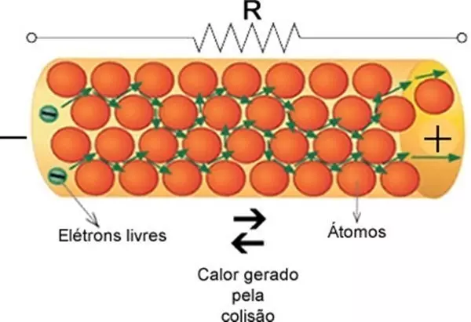
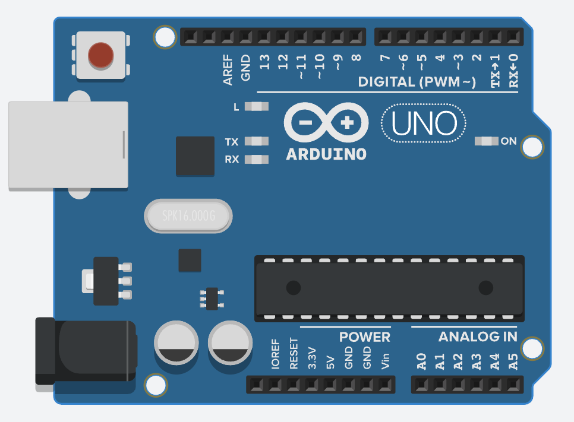

Fundamentos de Eletrônica 💡
Introdução à Eletrônica
A eletrônica é o ramo da ciência e da engenharia dedicado ao estudo e aplicação do movimento de elétrons, especialmente em materiais semicondutores, e aos dispositivos e sistemas que utilizam esse movimento. Seu objetivo é desenvolver componentes, circuitos e sistemas capazes de processar, controlar e transmitir informações e, em menor escala, energia. A eletrônica é onipresente em nosso cotidiano, desde simples eletrodomésticos até complexos sistemas industriais, de comunicação e computacionais. A eletrônica moderna é baseada em princípios físicos fundamentais, como a Lei de Ohm, as propriedades dos semicondutores e os conceitos de circuitos elétricos. Ela se divide em duas áreas principais: eletrônica analógica, que lida com sinais contínuos, e eletrônica digital, que lida com sinais discretos (geralmente binários). A eletrônica é uma disciplina multidisciplinar, envolvendo física, matemática, ciência dos materiais e engenharia elétrica. Seu desenvolvimento revolucionou a tecnologia, permitindo a miniaturização de dispositivos, o aumento da eficiência energética e a criação de sistemas complexos que são fundamentais para a sociedade moderna.
2. Conceitos Elétricos Essenciais ⚡
2.1. Eletrônica vs. Eletricidade
A eletrônica evoluiu do estudo dos fenômenos elétricos, com o desenvolvimento de componentes como as válvulas e, crucialmente, os semicondutores. Diferencia-se da eletricidade tradicional, que foca principalmente na geração e transmissão de grandes quantidades de energia, ao concentrar-se no controle preciso de sinais elétricos para processamento de informações. Os pilares da eletrônica incluem componentes como resistores, capacitores, indutores, diodos, transistores e circuitos integrados (CIs).
2.2. Tensão Elétrica (Voltagem)
A tensão elétrica, também conhecida como diferença de potencial (DDP), representa a "força" ou pressão que impulsiona os elétrons através de um circuito. É a energia potencial elétrica por unidade de carga. * Definição: A tensão é a diferença de energia potencial elétrica entre dois pontos em um circuito. * Potencial Elétrico: A tensão é frequentemente referida como potencial elétrico, e a diferença de potencial entre dois pontos é o que impulsiona a corrente elétrica. * Polaridade: A tensão tem polaridade, com um ponto sendo positivo (+) e outro negativo (-). A corrente flui do terminal positivo para o negativo em um circuito fechado. * Unidade: Volt (V). * Fontes Comuns: Pilhas, baterias, fontes de alimentação. * Importância: A tensão é essencial para o funcionamento de circuitos eletrônicos, pois determina a quantidade de energia disponível para mover cargas elétricas. * Medida: Pode ser medida com um voltímetro, que é conectado em paralelo ao componente ou circuito onde se deseja medir a tensão.
2.3. Corrente Elétrica
A corrente elétrica é o fluxo ordenado de portadores de carga (geralmente elétrons) através de um condutor, impulsionado pela tensão elétrica. * Unidade: Ampère (A). * Tipos Principais: Corrente Contínua (CC) e Corrente Alternada (CA). * Relevância: Controlar a corrente é vital para o funcionamento adequado e para evitar danos aos componentes.
2.3.1. Corrente Contínua (CC)
Na Corrente Contínua (CC), os elétrons fluem constantemente em uma única direção. * Fontes: Pilhas, baterias, células solares e fontes de alimentação CC (retificadas e estabilizadas). * Aplicações: Circuitos eletrônicos digitais, dispositivos portáteis, microcontroladores e sistemas de baixa tensão. Sua estabilidade e previsibilidade são ideais para circuitos sensíveis.
2.3.2. Corrente Alternada (CA)
Na Corrente Alternada (CA), o sentido do fluxo de elétrons inverte-se periodicamente, tipicamente seguindo uma forma de onda senoidal. * Fontes: Geradores em usinas elétricas. É o tipo de corrente distribuída nas redes elétricas residenciais e industriais. * Características: Facilidade de ter sua tensão elevada ou rebaixada por transformadores, o que é eficiente para transmissão a longas distâncias. * Frequência no Brasil: 60 Hertz (Hz), significando 60 ciclos de inversão por segundo. * Aplicações: Motores elétricos de grande porte, eletrodomésticos e sistemas de iluminação conectados diretamente à rede.
2.5. Diferença entre Tensão Elétrica e Corrente Elétrica
-
Tensão Elétrica (Voltagem): Pense na tensão como a pressão da água na tubulação. É a "força" que empurra os elétrons (as partículas que formam a corrente elétrica) através de um fio. Quanto maior a tensão, maior a "força" e, potencialmente, mais trabalho pode ser realizado. A unidade de medida é o Volt (V).
-
Corrente Elétrica: Pense na corrente como a quantidade de água que flui pela tubulação em um determinado tempo. É o fluxo ordenado de elétrons através de um condutor. Quanto mais elétrons passam por segundo, maior a corrente. A unidade de medida é o Ampère (A).

2.6. Resistência Elétrica
A resistência elétrica é a oposição que um material oferece à passagem da corrente elétrica. * Unidade: Ohm (Ω). * Fatores: Depende do material (resistividade), comprimento, área da seção transversal e temperatura do condutor. * Componente: O resistor é projetado para oferecer uma resistência específica e controlada, sendo usado para limitar corrente, dividir tensão e proteger outros componentes. * Efeito Joule: A passagem de corrente por uma resistência gera calor, um princípio aproveitado em aquecedores, mas que também representa perda de energia em muitos circuitos eletrônicos.

2.7. Lei de Ohm
A Lei de Ohm é uma das leis fundamentais da eletrônica e descreve a relação entre tensão (V), corrente (I) e resistência (R) em um circuito elétrico. A fórmula é:
V = I × R
Isso significa que a tensão em um resistor é diretamente proporcional à corrente que o atravessa.
* Aplicações: Essencial para calcular e dimensionar componentes em circuitos. Por exemplo, se um resistor de 1kΩ (1000Ω) está sujeito a uma tensão de 5V, a corrente que o atravessa será: I = V/R = 5V / 1000Ω = 0,005A = 5mA.
*
{kind=link}
3. Sistemas Eletrônicos ⚙️
3.1. O que são Sistemas Eletrônicos?
Um sistema eletrônico é um conjunto de componentes e circuitos eletrônicos interconectados, projetado para executar uma ou mais funções específicas, como amplificação de sinais, processamento de dados, controle de processos, ou comunicação. Exemplos variam de um simples rádio a complexos computadores, sistemas de automação industrial e robôs.
Geralmente, um sistema eletrônico pode ser decomposto em três blocos funcionais principais: entrada, processamento e saída. Podem ser classificados como analógicos, digitais ou mistos (combinando ambas as abordagens).
3.2. Entradas (Inputs)
As entradas de um sistema eletrônico são responsáveis por capturar informações do mundo exterior (ambiente, usuário) e convertê-las em sinais elétricos que o sistema possa entender. * Exemplos: * Sensores: De temperatura, luz, pressão, umidade, som (microfone). * Dispositivos de interação: Botões, chaves, teclados, telas sensíveis ao toque. * Sinais de outros sistemas: Saída de um sensor que se torna entrada para um microcontrolador. O tratamento adequado dos sinais de entrada é crucial para a correta operação do sistema.
3.3. Saídas (Outputs)
As saídas são os dispositivos ou sinais gerados pelo sistema após o processamento das informações de entrada. Elas convertem os sinais elétricos processados em uma ação, informação perceptível ou controle para outro sistema. * Exemplos: * Indicadores visuais: LEDs, displays (LCD, OLED). * Atuadores: Motores, relés (que controlam cargas maiores), válvulas solenoides. * Sinais sonoros: Alto-falantes, buzzers. * Comunicação: Sinais enviados para outros computadores ou dispositivos.
3.4. Processamento de Sinal
O processamento de sinal é o "cérebro" do sistema eletrônico. Envolve a manipulação dos sinais elétricos (originados das entradas) para extrair informações úteis, tomar decisões, realizar cálculos, filtrar ruídos, amplificar, atenuar ou converter esses sinais. * Tipos de Processamento: * Analógico: Realizado por circuitos com amplificadores operacionais, filtros passivos (com R, L, C), etc. * Digital: Realizado por microcontroladores (MCUs), processadores de sinais digitais (DSPs), FPGAs, ou lógica digital discreta, operando sobre representações numéricas dos sinais.

4. Tipos de Sinais 📈📉
4.1. Sinais Eletrônicos
Sinais eletrônicos são variações de tensão ou corrente elétrica que transportam informações através de um circuito ou sistema. A forma como essa variação ocorre define o tipo de sinal.
4.2. Sinal Digital
Um sinal digital assume um número finito de valores discretos (níveis) ao longo do tempo. O tipo mais comum é o sinal binário, que utiliza apenas dois níveis para representar informações: * Nível Alto (HIGH ou '1'): Geralmente uma tensão positiva (ex: +3.3V ou +5V). * Nível Baixo (LOW ou '0'): Geralmente zero volts (0V) ou uma tensão próxima a zero. Sistemas digitais, como computadores e microcontroladores, utilizam esses sinais para realizar operações lógicas, armazenar e transmitir dados de forma robusta contra ruídos.
4.3. Sinal Analógico
Um sinal analógico varia continuamente ao longo do tempo, podendo assumir qualquer valor dentro de um intervalo definido. Ele é uma representação direta de grandezas físicas. * Exemplos: A variação de tensão na saída de um microfone (representando a onda sonora), a leitura de um sensor de temperatura NTC, ou a intensidade luminosa medida por um LDR. Circuitos analógicos são usados para processar esses sinais diretamente.
5. Interfaces de Entrada e Saída (E/S) ↔️
5.1. Entrada/Saída (E/S) Digital
Interfaces de E/S digital lidam com sinais que possuem apenas dois estados (alto/baixo). * Entradas Digitais: Leem o estado de sensores digitais (ex: chave fim de curso, sensor de presença PIR que fornece saída HIGH/LOW), botões. * Saídas Digitais: Controlam dispositivos que operam com lógica binária (ex: acender/apagar um LED, acionar um relé através de um transistor). * Microcontroladores: Possuem pinos configuráveis como entrada ou saída digital. * Protocolos de Comunicação Digital Serial: I2C, SPI, UART são exemplos que transferem dados digitais bit a bit ou em pacotes.
5.2. Entrada/Saída (E/S) Analógica
Interfaces de E/S analógica permitem a interação com sinais contínuos. * Entradas Analógicas: Leem sinais de sensores analógicos (ex: sensor de temperatura LM35, potenciômetro, LDR). Para que microcontroladores (que são digitais) possam processá-los, é necessário um Conversor Analógico-Digital (ADC). * Saídas Analógicas: Geram sinais de tensão variáveis. Embora alguns microcontroladores possuam Conversores Digital-Analógico (DAC), uma técnica comum para simular uma saída analógica com pinos digitais é a Modulação por Largura de Pulso (PWM).
6. Circuitos e Técnicas Comuns 🛠️
6.1. Divisor de Tensão
Um divisor de tensão é um circuito simples, geralmente construído com dois ou mais resistores em série, que produz uma tensão de saída (Vout) que é uma fração da tensão de entrada (Vin).
* Fórmula (para 2 resistores R1 e R2, com Vout sobre R2): Vout = Vin × (R2 / (R1 + R2))
* Aplicações: Adaptar níveis de tensão (ex: para a entrada de um ADC), ler sensores resistivos (como LDRs ou termistores).
6.2. Conversor Analógico-Digital (ADC)
O ADC é um circuito eletrônico (frequentemente integrado em microcontroladores) que converte um sinal de tensão analógico em um valor digital (um número). * Características Chave: * Resolução: Número de bits que o ADC usa para representar o sinal analógico (ex: um ADC de 10 bits pode representar 210 = 1024 níveis discretos). Quanto maior a resolução, mais precisa a conversão. * Velocidade de Conversão (Sample Rate): Quantas vezes por segundo o ADC pode converter o sinal. * Faixa de Tensão de Entrada: Os limites mínimo e máximo de tensão que o ADC pode ler.
6.3. Modulação por Largura de Pulso (PWM)
A PWM é uma técnica para controlar a potência média entregue a uma carga ou para gerar um sinal analógico aproximado usando uma saída digital. Isso é feito variando-se a largura (duração) dos pulsos de uma onda quadrada, mantendo a frequência constante. * Duty Cycle: A porcentagem de tempo em que o sinal permanece em nível alto durante um período da onda. Um duty cycle de 0% significa que a saída está sempre desligada, 50% significa que está ligada metade do tempo, e 100% significa que está sempre ligada. * Aplicações: Controle da intensidade de LEDs, controle de velocidade de motores DC, geração de sinais de áudio simples, controle de servos.
7. Comunicação entre Dispositivos 💬
7.1. Comunicação Serial
A comunicação serial é um processo de envio de dados um bit de cada vez, sequencialmente, sobre um canal de comunicação (como um fio ou par de fios). Em contraste, a comunicação paralela envia múltiplos bits simultaneamente em vários canais. * Vantagens: Requer menos fios condutores, o que é mais simples e barato, especialmente para longas distâncias. * Tipos Comuns: * Assíncrona: Não utiliza um sinal de clock compartilhado entre transmissor e receptor. O timing é gerenciado por bits de start e stop. Ex: RS-232, UART (usada em muitos microcontroladores para comunicação com PCs ou outros MCUs). * Síncrona: Utiliza um sinal de clock compartilhado para sincronizar a transmissão e recepção dos dados. Ex: SPI (Serial Peripheral Interface), I2C (Inter-Integrated Circuit). * Aplicações: Conexão de microcontroladores com sensores, módulos (GPS, Wi-Fi), outros microcontroladores, ou computadores.
8. Componentes Eletrônicos Fundamentais em Detalhe 🧱
Esta seção detalha as características técnicas dos componentes eletrônicos passivos e ativos mais comuns.
8.1. Resistor (R)
O resistor é um componente passivo cuja principal função é limitar o fluxo de corrente elétrica em um circuito, além de ser usado para dividir tensões.
* Símbolo: Imagem de Símbolo esquemático de um resistor (padrão IEC e americano)
* Unidade de Medida: Ohm (Ω). Múltiplos comuns: kΩ (kiloohm), MΩ (megaohm).
* Tipos Comuns:
* De Filme de Carbono: Baixo custo, tolerâncias mais altas (ex: 5%, 10%). Comuns em aplicações gerais.
* De Filme Metálico: Melhor estabilidade e tolerâncias mais baixas (ex: 1%, 0.1%). Usados onde a precisão é importante.
* De Fio Enrolado (Wirewound): Feitos enrolando um fio resistivo em um núcleo. Suportam altas potências e podem ter valores de resistência muito precisos ou muito baixos.
* SMD (Surface Mount Device): Componentes para montagem em superfície, muito pequenos, comuns em eletrônica moderna. Seus valores são frequentemente indicados por um código numérico.
* Parâmetros Técnicos Principais:
* Resistência Nominal (R): O valor de resistência que o componente deve ter, em Ohms.
* Tolerância: A variação permitida em relação ao valor nominal, expressa em porcentagem (ex: ±5%). Um resistor de 1kΩ com tolerância de 5% pode ter um valor real entre 950Ω e 1050Ω.
* Potência Nominal (P): A quantidade máxima de potência (em Watts, W) que o resistor pode dissipar na forma de calor sem ser danificado. Valores comuns: 1/8W, 1/4W, 1/2W, 1W, etc. P = V × I = I² × R = V² / R.
* Coeficiente de Temperatura (TCR): Indica o quanto a resistência varia com a mudança de temperatura, expresso em ppm/°C (partes por milhão por grau Celsius).
* Tensão Máxima de Operação: A tensão máxima que pode ser aplicada aos terminais do resistor.
* Código de Cores: Resistores through-hole (com terminais) frequentemente usam faixas coloridas para indicar seu valor de resistência, tolerância e, às vezes, coeficiente de temperatura.
* Aplicações Típicas:
* Limitação de corrente para LEDs e outros componentes.
* Divisores de tensão.
* Resistores de pull-up e pull-down em circuitos digitais.
* Terminação de linhas de transmissão.
* Filtros RC (em conjunto com capacitores).
8.2. Capacitor (C)
O capacitor é um componente passivo capaz de armazenar energia elétrica em um campo elétrico formado entre duas placas condutoras separadas por um material dielétrico. * Símbolo: Imagem de Símbolo esquemático de um capacitor não polarizado e polarizado * Unidade de Medida: Farad (F). Submúltiplos comuns: µF (microfarad, 10-6F), nF (nanofarad, 10-9F), pF (picofarad, 10-12F). * Tipos Comuns e seus Dielétricos: * Cerâmico: Dielétrico de cerâmica. Pequenos, baratos, bons para altas frequências. Podem ser do tipo disco ou multicamadas (MLCC). Valores típicos de pF a alguns µF. * Eletrolítico (Alumínio): Dielétrico de óxido de alumínio. Polarizados (possuem terminais positivo e negativo que devem ser respeitados). Oferecem alta capacitância por volume (µF a milhares de µF). Usados em filtragem de fontes de alimentação, acoplamento de áudio. Têm vida útil limitada. * De Tântalo: Dielétrico de óxido de tântalo. Polarizados. Menores que os eletrolíticos de alumínio para a mesma capacitância e tensão, melhor estabilidade e desempenho em frequência. Mais caros. * De Poliéster (Filme Plástico): Dielétrico de filme de poliéster. Boa estabilidade, não polarizados. Usados em circuitos de temporização, filtros. * De Polipropileno (Filme Plástico): Similar ao poliéster, mas com melhores características para aplicações de áudio e alta frequência devido a perdas menores. * SMD (Surface Mount Device): Geralmente cerâmicos multicamadas (MLCC) ou de tântalo. * Parâmetros Técnicos Principais: * Capacitância Nominal (C): O valor de capacitância que o componente deve ter. * Tensão de Trabalho (Working Voltage, WVDC): A tensão DC máxima que pode ser aplicada continuamente ao capacitor sem danificá-lo. Para capacitores em circuitos CA, a tensão de pico CA não deve exceder este valor. É crucial escolher um capacitor com tensão de trabalho superior à máxima tensão esperada no circuito. * Tolerância: A variação permitida em relação à capacitância nominal (ex: ±10%, ±20%). * Polaridade: Capacitores eletrolíticos e de tântalo são polarizados e devem ser conectados corretamente no circuito. Inverter a polaridade pode destruí-los. * ESR (Equivalent Series Resistance): Resistência interna indesejada do capacitor, importante em altas frequências e fontes chaveadas. Valores menores são melhores. * Corrente de Fuga (Leakage Current): Pequena corrente DC que flui através do dielétrico. Idealmente seria zero. * Coeficiente de Temperatura: Indica como a capacitância varia com a temperatura. * Aplicações Típicas: * Filtragem de ruídos e ondulações (ripple) em fontes de alimentação (capacitores de filtro). * Acoplamento de sinais CA entre estágios de um amplificador (bloqueando a componente CC). * Desacoplamento (bypass) para estabilizar a tensão de alimentação de CIs. * Circuitos de temporização (em conjunto com resistores, como no CI 555). * Osciladores e circuitos ressonantes (em conjunto com indutores). * Armazenamento de energia de curto prazo.
8.3. Indutor (L)
O indutor é um componente passivo que armazena energia em um campo magnético quando uma corrente elétrica flui através dele. Sua principal característica é opor-se a variações na corrente elétrica. * Símbolo: Imagem de Símbolo esquemático de um indutor * Unidade de Medida: Henry (H). Submúltiplos comuns: mH (milihenry, 10-3H), µH (microhenry, 10-6H), nH (nanohenry, 10-9H). * Tipos Comuns: * Com Núcleo de Ar: Simplesmente uma bobina de fio, sem material magnético no centro. Baixa indutância, bom para altas frequências (RF). * Com Núcleo de Ferro Laminado: Usado para altas indutâncias em baixas frequências (ex: filtros de linha, transformadores de áudio). O núcleo aumenta a indutância. * Com Núcleo de Ferrite: Ferrite é um material cerâmico ferromagnético. Usado em altas frequências (RF, fontes chaveadas) para aumentar a indutância e reduzir perdas. Podem ter formato de bastão, toroidal, E, etc. * Toroidal: Bobina enrolada em um núcleo em forma de anel (toroide). Campo magnético confinado dentro do núcleo, minimizando interferências. * SMD (Surface Mount Device): Pequenos indutores para montagem em superfície, podem ser do tipo chip ou fio enrolado. * Parâmetros Técnicos Principais: * Indutância Nominal (L): O valor de indutância que o componente deve ter. * Tolerância: A variação permitida em relação à indutância nominal. * Corrente Nominal (Rated Current) ou Corrente de Saturação (Saturation Current, Isat): A corrente DC máxima que o indutor pode suportar antes que seu núcleo sature (perca suas propriedades magnéticas, diminuindo a indutância) ou que o fio superaqueça (Corrente RMS, Irms). * Resistência DC (DCR): A resistência ôhmica do fio da bobina. Idealmente seria zero. Causa perdas de potência. * Fator de Qualidade (Q): Medida da eficiência do indutor. É a razão entre sua reatância indutiva e sua resistência em uma dada frequência. Q alto é desejável. * Frequência de Auto-Ressonância (SRF): Devido à capacitância parasita entre as espiras, um indutor se comporta como um circuito LC ressonante em uma certa frequência. Acima da SRF, o indutor se comporta mais como um capacitor. * Aplicações Típicas: * Filtros (passa-baixa, passa-alta, passa-faixa) para separar frequências. * Fontes de alimentação chaveadas (conversores buck, boost) para armazenamento e transferência de energia. * Circuitos osciladores e ressonantes (circuitos LC). * Supressão de interferência eletromagnética (EMI) (chokes). * Transformadores (dois ou mais indutores acoplados magneticamente). * Antenas (em RF).
8.4. Diodo
O diodo é um componente semicondutor que atua primariamente como uma chave unidirecional para a corrente elétrica: permite que a corrente flua facilmente em uma direção (polarização direta) e oferece alta resistência ao fluxo na direção oposta (polarização reversa). * Símbolo: Imagem de Símbolo esquemático de um diodo, mostrando anodo e catodo (A seta indica o sentido convencional da corrente). O terminal da ponta da seta é o Anodo (A) e o da barra é o Catodo (K). * Tipos Comuns e suas Funções: * Diodo Retificador: Converte corrente alternada (CA) em corrente contínua (CC). Ex: 1N400x (ex: 1N4007), 1N540x. * Diodo de Sinal: Usado para processar sinais de baixa corrente e alta frequência. Ex: 1N4148, 1N914. * Diodo Zener: Projetado para operar na região de ruptura reversa, mantendo uma tensão constante (tensão Zener, Vz) em seus terminais. Usado para regulação de tensão. * LED (Light Emitting Diode - Diodo Emissor de Luz): Emite luz quando polarizado diretamente. Disponível em várias cores e intensidades. * Diodo Schottky: Possui uma queda de tensão direta (Vf) muito baixa (ex: 0.2V-0.4V) e chaveamento rápido. Usado em fontes chaveadas, circuitos de alta frequência e proteção contra inversão de polaridade com baixa perda. * Fotodiodo: Converte luz em corrente ou tensão elétrica. Usado como sensor de luz. * Varicap (Diodo de Capacitância Variável): Sua capacitância de junção varia com a tensão reversa aplicada. Usado em sintonia de circuitos de RF. * Parâmetros Técnicos Principais: * Tensão Direta (Forward Voltage, Vf): Queda de tensão no diodo quando conduzindo corrente na direção direta. Típica: 0.6-0.7V para diodos de silício, 0.2-0.4V para Schottky, 1.5-3.5V para LEDs (depende da cor). * Corrente Direta Média Máxima (Average Forward Current, If(avg)) ou Corrente Direta de Pico (Peak Forward Current, Ifsm): A corrente máxima que o diodo pode conduzir continuamente ou em picos curtos sem ser danificado. * Tensão Reversa de Pico (Peak Inverse Voltage, PIV ou Vrrm): A tensão reversa máxima que o diodo pode suportar sem entrar em ruptura (conduzir excessivamente na direção reversa e ser danificado). Para Zeners, esta é a tensão onde ele começa a regular (Vz). * Corrente de Fuga Reversa (Reverse Leakage Current, Ir): Pequena corrente que flui quando o diodo está polarizado reversamente (abaixo da tensão de ruptura). Idealmente zero. * Tempo de Recuperação Reversa (Reverse Recovery Time, trr): Tempo que o diodo leva para parar de conduzir quando a polarização muda de direta para reversa. Importante em aplicações de alta frequência. * Potência de Dissipação Máxima (Pd): Potência máxima que o diodo pode dissipar. * Aplicações Típicas: * Retificação em fontes de alimentação (ponte retificadora). * Proteção contra inversão de polaridade. * Regulação de tensão (diodos Zener). * Indicação visual (LEDs). * Detecção de sinais de RF (diodos de sinal). * Circuitos lógicos (portas OR/AND com diodos, embora menos comum hoje). * Clampeamento de tensão (voltage clamping).
8.5. Transistor
O transistor é um dispositivo semicondutor usado para amplificar sinais elétricos ou para atuar como uma chave eletrônica controlada eletricamente. É o bloco de construção fundamental da eletrônica moderna.
* Tipos Principais:
* Transistor de Junção Bipolar (BJT - Bipolar Junction Transistor):
* Tipos: NPN e PNP.
* Terminais: Emissor (E), Base (B), Coletor (C).
* Funcionamento: Uma pequena corrente na base controla uma corrente muito maior entre o coletor e o emissor. É um dispositivo controlado por corrente.
* Símbolos: Imagem de Símbolo esquemático de um transistor NPN e PNP BJT
* Transistor de Efeito de Campo (FET - Field-Effect Transistor):
* Subtipos Comuns: JFET (Junction FET) e MOSFET (Metal-Oxide-Semiconductor FET). MOSFETs são os mais utilizados, especialmente em CIs.
* MOSFET Tipos: Canal N (NMOS) e Canal P (PMOS); Modo de Depleção e Modo de Enriquecimento (mais comum).
* Terminais (MOSFET): Gate (G), Dreno (D), Fonte (S).
* Funcionamento: A tensão aplicada ao gate controla a condutividade do canal entre dreno e fonte. É um dispositivo controlado por tensão, com altíssima impedância de entrada no gate (para MOSFETs).
* Símbolos: Imagem de Símbolo esquemático de um MOSFET canal N e canal P (modo de enriquecimento)
* Parâmetros Técnicos Principais (BJT):
* Ganho de Corrente DC (hFE ou β): Relação entre a corrente de coletor (Ic) e a corrente de base (Ib). hFE = Ic / Ib. Varia com Ic, temperatura e entre unidades.
* Corrente de Coletor Máxima (Ic_max): Corrente máxima que pode fluir pelo coletor.
* Tensão Coletor-Emissor Máxima (Vceo): Tensão máxima entre coletor e emissor com a base aberta.
* Tensão Coletor-Base Máxima (Vcbo): Tensão máxima entre coletor e base com o emissor aberto.
* Tensão Emissor-Base Máxima (Vebo): Tensão máxima reversa entre emissor e base.
* Potência de Dissipação Máxima (Pd): Potência máxima que o transistor pode dissipar.
* Frequência de Transição (fT): Frequência na qual o ganho de corrente do transistor cai para 1. Indica a capacidade de operação em alta frequência.
* Parâmetros Técnicos Principais (MOSFET de Enriquecimento):
* Tensão de Limiar Gate-Fonte (Gate Threshold Voltage, Vgs(th)): Tensão mínima Vgs necessária para começar a formar o canal e permitir a condução entre dreno e fonte.
* Resistência Dreno-Fonte ON (Static Drain-Source On-Resistance, Rds(on)): Resistência do canal quando o MOSFET está totalmente ligado (saturado). Valores baixos são desejáveis para minimizar perdas.
* Corrente de Dreno Contínua Máxima (Id_max): Corrente máxima que pode fluir pelo dreno.
* Tensão Dreno-Fonte Máxima (Vds_max): Tensão máxima entre dreno e fonte.
* Tensão Gate-Fonte Máxima (Vgs_max): Tensão máxima que pode ser aplicada entre gate e fonte (o gate é sensível a ESD).
* Potência de Dissipação Máxima (Pd): Potência máxima que o MOSFET pode dissipar.
* Capacitâncias de Gate (Ciss, Coss, Crss): Capacitâncias parasitas que afetam a velocidade de chaveamento.
* Aplicações Típicas:
* Amplificadores: De áudio, RF, sinais pequenos.
* Chaves Eletrônicas: Para controlar cargas (motores, LEDs de alta potência, relés), em fontes chaveadas.
* Osciladores: Geração de sinais periódicos.
* Reguladores de Tensão: Lineares ou chaveados.
* Lógica Digital: MOSFETs são a base das portas lógicas em CIs digitais (CMOS).
8.6. Circuito Integrado (CI ou Chip)
Um Circuito Integrado, popularmente conhecido como chip, é um dispositivo semicondutor que contém um grande número de transistores, resistores, capacitores e diodos interconectados em uma pequena pastilha (die) de material semicondutor (geralmente silício). CIs realizam funções eletrônicas complexas. * Símbolo: Geralmente um retângulo com pinos numerados. O símbolo interno pode variar ou ser omitido, dependendo da complexidade. * Tipos Principais (por função): * CIs Analógicos: Processam sinais analógicos. * Amplificadores Operacionais (Op-Amps): Ex: LM741, TL07x. Usados em amplificação, filtragem, comparadores, etc. * Reguladores de Tensão: Ex: LM78xx (positivo), LM79xx (negativo), LM317 (ajustável). * Temporizadores: Ex: CI 555. * Conversores de Dados: ADCs e DACs. * CIs Digitais: Processam sinais digitais (binários). * Portas Lógicas: Ex: Família 74xx (TTL), 4000 series (CMOS) - AND, OR, NOT, NAND, NOR, XOR. * Flip-Flops e Latches: Elementos de memória básicos. * Contadores e Registradores. * Microprocessadores (µP) e Unidades Centrais de Processamento (CPUs): O "cérebro" de computadores. * Microcontroladores (MCU): Um "computador em um chip", contendo CPU, memória (RAM, ROM/Flash) e periféricos de E/S. Ex: PIC (Microchip), AVR (Atmel/Microchip - usado em Arduinos), ESP32. * Memórias: RAM (Random Access Memory), ROM (Read-Only Memory), Flash, EEPROM. * FPGAs (Field-Programmable Gate Arrays) e CPLDs (Complex Programmable Logic Devices): CIs cuja lógica interna pode ser programada pelo usuário. * CIs de Sinal Misto: Combinam funcionalidades analógicas e digitais no mesmo chip. Ex: ADCs e DACs com interfaces digitais, codecs de áudio. * Escalas de Integração (número aproximado de transistores por chip): * SSI (Small-Scale Integration): Dezenas de transistores (ex: portas lógicas básicas). * MSI (Medium-Scale Integration): Centenas de transistores (ex: contadores, multiplexadores). * LSI (Large-Scale Integration): Milhares a dezenas de milhares (ex: primeiros microprocessadores). * VLSI (Very Large-Scale Integration): Centenas de milhares a milhões (ex: CPUs modernas, MCUs). * ULSI (Ultra-Large-Scale Integration) / GSI (Giga-Scale Integration): Bilhões de transistores (ex: GPUs avançadas, SoCs complexos). * Encapsulamentos (Packages): A "casca" protetora do CI com os pinos para conexão. * Through-Hole: DIP (Dual In-line Package). * SMD (Surface Mount): SOIC, QFP, BGA, etc. * Parâmetros Técnicos: Extremamente variados e dependentes da função específica do CI. Sempre consultar o datasheet (folha de dados) do componente para informações detalhadas sobre: * Tensões de alimentação (Vcc, Vdd, Vss, GND). * Níveis lógicos de entrada/saída (para CIs digitais). * Características de entrada/saída (impedância, corrente máxima). * Faixas de frequência de operação. * Consumo de potência. * Diagrama de pinagem (pinout). * Características específicas da função (ex: ganho para um Op-Amp, velocidade para uma CPU). * Aplicações: Praticamente todos os dispositivos eletrônicos modernos, desde calculadoras e smartphones até computadores, sistemas de comunicação, automotivos, médicos e industriais.
Protoboard
A protoboard, também conhecida como placa de ensaio ou breadboard, é uma ferramenta essencial para prototipagem eletrônica. Ela permite a montagem rápida e sem solda de circuitos eletrônicos, facilitando testes e modificações.
1. O que é uma Protoboard?
A protoboard é uma placa com uma matriz de furos conectados eletricamente, onde componentes eletrônicos podem ser inseridos e conectados entre si. É amplamente utilizada por engenheiros, estudantes e hobbyistas para testar circuitos antes da montagem final em placas de circuito impresso (PCBs).
2. Estrutura da Protoboard
A protoboard é composta por uma série de linhas e colunas de furos, organizados em blocos. As principais características incluem: * Linhas de Alimentação: Geralmente localizadas nas bordas superior e inferior, são usadas para distribuir tensão positiva (Vcc) e terra (GND) para o circuito. * Matriz de Conexão: O centro da protoboard contém uma matriz de furos conectados em colunas, onde os componentes são inseridos. Cada coluna é eletricamente conectada, permitindo que componentes em uma mesma coluna compartilhem conexões. * Divisões: Algumas protoboards possuem divisões no meio, separando as linhas de alimentação da matriz de conexão, o que ajuda a organizar o circuito e evitar curtos-circuitos acidentais. * Tamanho e Formato: As protoboards vêm em vários tamanhos, desde pequenas (cerca de 170 pontos) até grandes (mais de 800 pontos), permitindo a montagem de circuitos simples ou complexos. * Material: Geralmente feitas de plástico com contatos metálicos de cobre ou níquel, que garantem boa condutividade elétrica.
3. Como Usar uma Protoboard
Para usar uma protoboard, siga estes passos básicos: 1. Planejamento do Circuito: Antes de começar, desenhe o circuito que deseja montar, identificando os componentes e suas conexões. 2. Inserção de Componentes: Insira os componentes eletrônicos (resistores, capacitores, transistores, etc.) nos furos da protoboard, certificando-se de que estão conectados corretamente. 3. Conexão de Fios: Use fios jumper para conectar os terminais dos componentes entre si e às linhas de alimentação. Certifique-se de que as conexões estão firmes e corretas.